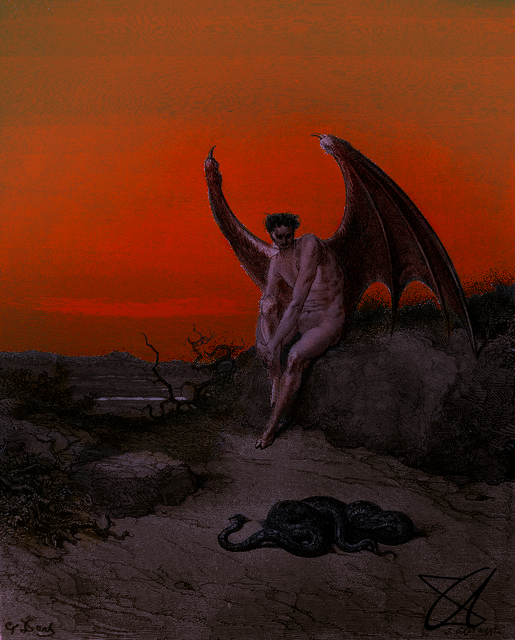
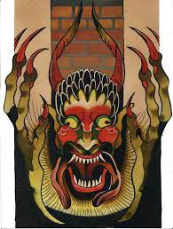

Types Of Devil

Exorcist
Child actress Linda Blair played a possessed 12-year-old in The Exorcist, but it was Hollywood veteran Mercedes McCambridge who provided the voice of the devil within the young girl’s body.

Paradise Lost
It was the 17th-century Puritan poet John Milton who produced the first psychologically compelling portrait of the devil, no longer the sly predator but (initially, at least) an edgy seductive hero.

Codex Gigas
Depictions of the devil were everywhere in medieval times, but the early 13th-century Codex Gigas – the largest medieval manuscript in existence
– stands out.